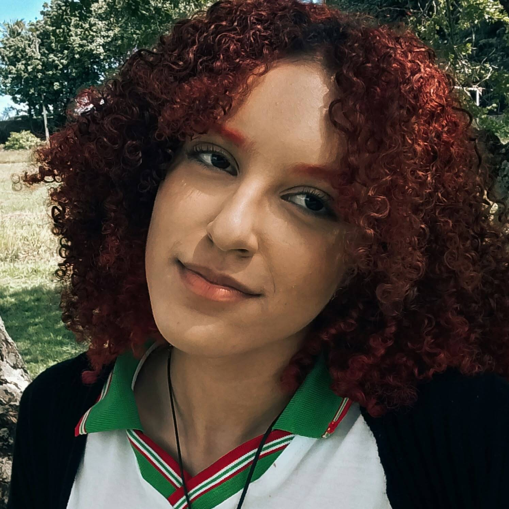
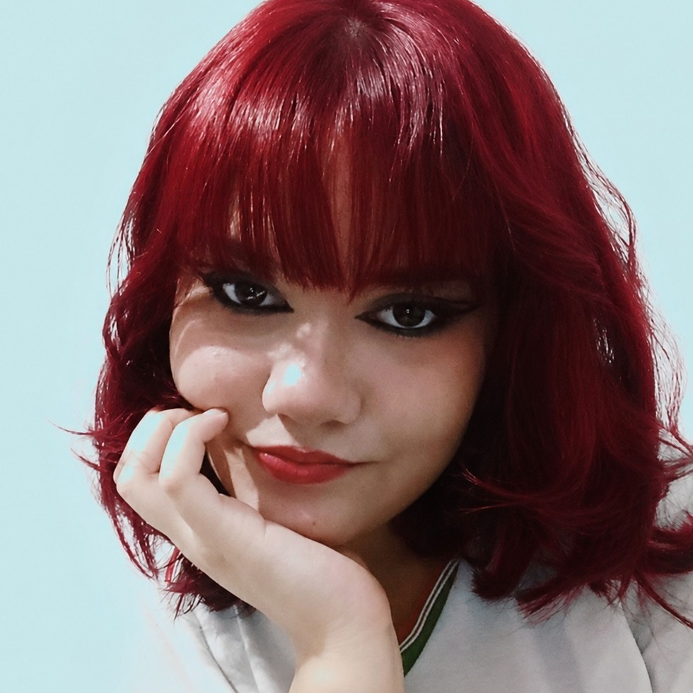

Sobre
O Núcleo de Gênero, Diversidade e Sexualidade (NUGEDIS) do Campus Marechal Deodoro é um espaço de acolhimento, formação e combate contra a LGBTQIAPN+fobia e o machismo. Trabalhamos para promover respeito às formas de sexualidade, identidades de gênero e para construir um ambiente escolar mais inclusivo e seguro para todes.
Venha participar! Todas as pessoas são bem-vindes, independentemente de orientação sexual ou identidade de gênero. Juntos nós fortalecemos o respeito e combateremos o preconceito.
Coordenadores

Diogo Souza
Educador que acredita no poder transformador que a Escola possui nas comunidades. Cinéfilo, leitor, militante e defensor dos Direitos Humanos.

Dartagnan Macêdo
Professor e Psicólogo, pesquisador na área de Políticas Públicas e Educação Inclusiva.
Monitores

Cecília Fernanda
3° Ano "A" - Guia de Turismo

Felipe Weiler
3° Ano "A" - Meio Ambiente

Alexandre Pimentel
2° Ano "B" - Meio Ambiente

Weryka Layany
2° Ano "A" - Guia de Turismo

ísis Melissa
2° Ano "B" - Meio Ambiente
Atividades Passadas
Para mais informações, se torne um membro Nugedis ou nos siga no nosso Instagram.
Inicie aqui!
Estamos abertos a docentes e discentes! Você pode contribuir com ideias, arte, pesquisa ou simplesmente participar das nossas atividades e reuniões.
Reuniões: Mensais, a definir pelo professor Diogo Souza.
Contato: Com qualquer monitor, coordenador do núcleo. Aceitamos contato pelo e-mail nugedis.marechal@ifal.edu.br.